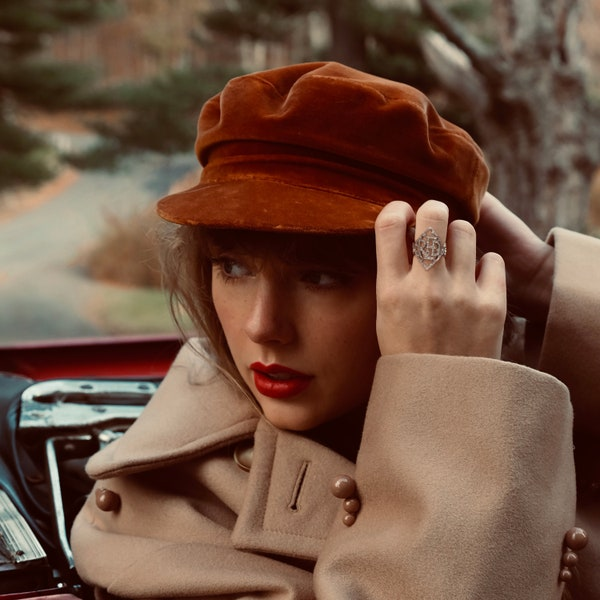
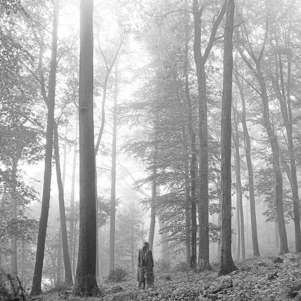

Taylor Swift Fanpage
Taylor Swift
My ranking of her albums.
1. Reputation

Reputation is my favorite album because it shows how far she's come as an artist and I love the mentality behind it.
2. Speak Now
Speak now is next because I grew up listening to it and Enchanted is one of my favorite songs. While I might listen to the other ones more right now, it gets the second spot because this is album I listened to as a kid that made me become a fan.
3. Red (Taylor's Version)
Red is next because it's a very scream-able album whether you're in a bad or good mood.
4. Lover

Lover is next because I always turn to these songs when I need a pick-me-up. It's very calming and peaceful.
5. folklore
Folklore is next because its very calming and I always turn it on to study. I also appreciate the range it shows in her work.
6. Fearless (Taylor's Version)
Fearless has so many iconic songs on it that I grew up listening to. However, it's here I just don't turn to it as much as the others.
7. 1989

1989 is a bop but again just isn't one I turn on as much.
8. Taylor Swift

The only songs I really listen to on this one are Picture to Burn and Our Song, which are favorites but this album as a whole just isn't my favorite.
9. evermore

I like Champagne Problems but don't really listen to any of the other songs on this album.